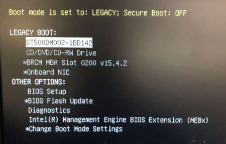
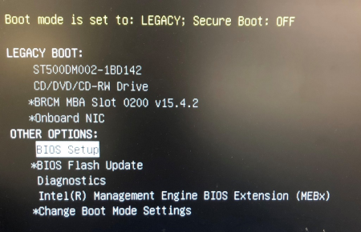
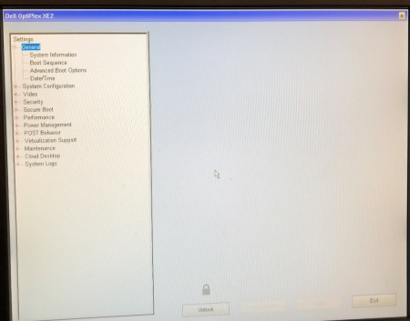
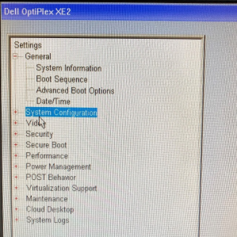
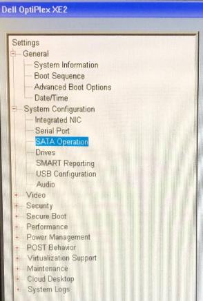
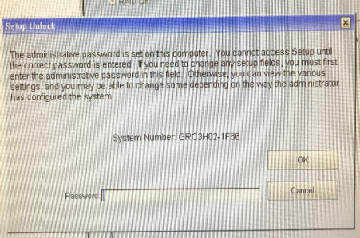
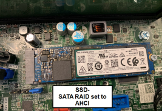
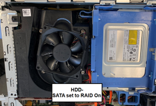
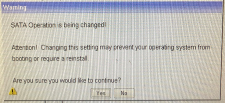
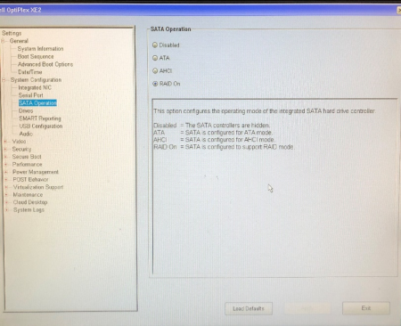

PC BIOS Settings before Imaging (SATA RAID On)
This procedure provides instructions on how to configure the BIOS settings for the Dell Optiplex PC.
In preparation for Imaging a Dell Optiplex PC, the BIOS settings must be configured correctly.
Some Dell Optiplex PCs default with the wrong BIOS configuration.
This causes a Windows Recovery Error after re-imaging.
- Incorrect: SATA Operation set to ATA.
- Correct: SATA Operation set to RAID On.
This procedure provides instructions on how to correct the BIOS settings prior to re-imaging to allow for smooth image/software installation.
Parts Affected
- Dell XE2 PC with 16GB RAM - [CMP-01711]
Time Required
- 5 Minutes
Procedure

|
Note—The following steps are only applicable to the XE2 computer. DO NOT perform the procedure on XE or XE3 computers. |
- Enter the BIOS Configuration Menu.
- Power ON, the Panther PC.
 Press F12 while the PC is booting to access the Boot menu.
Press F12 while the PC is booting to access the Boot menu.

- Use the arrow keys to select BIOS Setup under “Other Options.”

- Press Enter.
- The BIOS Setup window will be displayed.

- Change the System Configuration.
- Click on the “+” next to System Configuration at the left of the window.

- Select SATA Operation.

- Click the Unlock button at the bottom of the window.
- A window might open and ask for a password. Enter “gpservice” and click OK.

- If the password was not accepted, retry the password (ensure Caps Lock is off).
If the password is still not accepted, reset the BIOS password as per the Service Manual. Refer to the Panther Service Manual > Unlocking the XE2 BIOS
- Select RAID On.
Note — For systems with an SSD installed, set SATA RAID to AHCI.

- A warning message will appear. Select Yes.

- Click Apply at the bottom of the window.
- Click Exit at the bottom of the window and the PC will reboot.
Verification
- Restart the PC
- Press F12 while the PC is booting to access the Boot menu.
- Use the arrow keys to select BIOS Setup under Other Options and press enter.
- In the BIOS Setup, click on the “+” next to System Configuration.
- Click on SATA Operation and verify that RAID On is selected.

- Click Exit at the bottom of the window and the PC will reboot.

 button at the top of the page to send feedback, comments, or change requests.
button at the top of the page to send feedback, comments, or change requests.